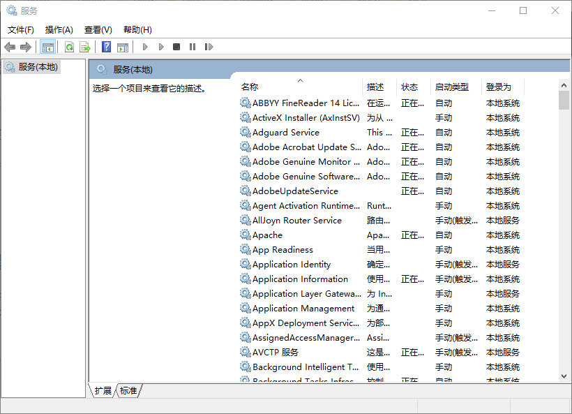
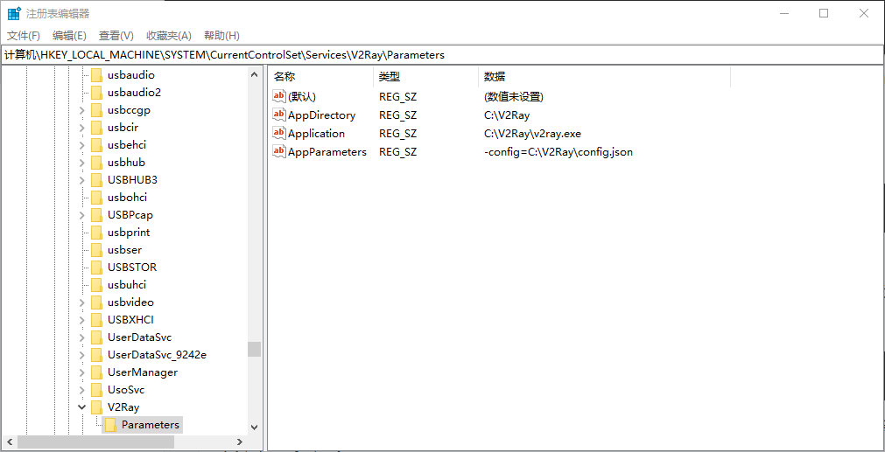
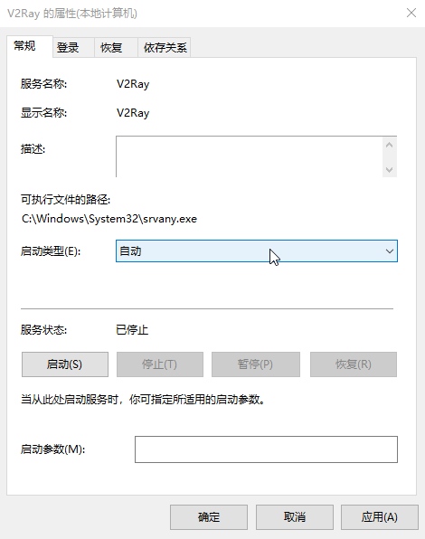

使用服务封装器创建 Windows 服务
Windows 服务是指 Windows NT 操作系统中的一种运行在后台的计算机程序。它在概念上类似于 Unix 守护进程。Windows 服务必须符合服务控制管理器（负责管理Windows服务的组件）的接口规则和协议。——维基百科
将程序设置为 Windows 服务，可以让程序在后台运行，隐藏程序运行的用户界面，或者让程序开机启动等。
要将程序创建为 Windows 服务，这个程序需要符合服务控制管理器的接口规则和协议的，否则，就需要使用服务封装器将程序封装为服务，本内容将以 V2Ray 为例介绍如何封装应用程序为服务。
对于符合服务控制管理器的接口规则和协议的程序，一般都附有创建 Windows 服务的说明，如 Apache、MySQL 的 Windows 服务的创建等，在此不再详细叙述，阅读相关说明即可。
服务管理
要管理 Windows 服务，可以使用服务扩展或 sc.exe 等。
服务扩展

服务扩展是基于 Microsoft 管理控制台提供的一个组件，可以通过以下方式进入服务管理单元：
- 控制面板 > 系统和安全 > 管理工具 > 服务
- 任务管理器 > 服务 > 打开服务
- Windows 10 可在任务栏的搜索框中输入“服务”
sc.exe
sc 是用来与服务控制管理器和服务进行通信的命令行程序，可以安装、启动、停止和卸载服务，此工具在 Windows XP 及更高版本中提供。其主要用法为：
sc <server> [command] [service name] <option1> <option2>...
可以键入 sc 获取有关命令的更多帮助。
封装应用程序为服务
对于不符合服务控制管理器的接口规则和协议的程序，需要用到服务封装器，如 NSSM、srvany.exe等。
srvany.exe
srvany.exe 是微软官方提供的，该程序作为服务封装器来处理预期的服务接口并允许配置任何可执行文件或脚本作为一个服务。
值得一提的是 srvany.exe 最后一次更新还是在 2003 年，它包含在 Windows Server 2003 Resource Kit Tools 中。尽管 srvany.exe 是 32 位的程序，但依然可以在如今的 64 位系统中正常运行。
要获取 srvany.exe，需要从以下地址下载 Windows Server 2003 Resource Kit Tools：
https://www.microsoft.com/en-us/download/details.aspx?id=17657
下载的文件名为 rktools.exe，我们无需安装该程序，因为程序本身就是一个压缩包，只需要使用解压缩工具（如 WinRAR）将其解压缩即可，解压缩后得到一个名为 rktools.msi 的文件，将其扩展名更改为 .zip 后再次解压缩，即可从中获取到 srvany.exe。
创建 V2Ray 服务
以 V2Ray 为例创建 Windows 服务，正常 V2Ray 是这样启动的：
path1/v2ray -config=path1/config.json
这是一个带参数的命令，其中 path1 为 v2ray 的实际路径。
因为 v2ray 并不符合服务控制管理器的接口规则和协议，所以需要使用服务封装器进行封装，以 srvany.exe 为例，并使用 sc 创建服务。
sc 创建服务的命令为：
sc <server> create [service name] [binPath= ] <option1> <option2>...
其中 [service name] 为创建的服务的名称，[binPath= ] 的值为将作为服务运行的程序的路径和名称，可以在命令行窗口键入 sc create 获取有关命令的更多帮助。
注意：选项名称包括等号，等号和值之间需要一个空格。
创建 V2Ray 服务，以管理员权限运行以下命令：
sc create V2Ray binPath= path2/srvany.exe
其中，V2Ray 是创建的服务的名称，path2 为 srvany.exe 的实际路径。
警告：以下内容需要使用注册表编辑器，有关如何使用注册表编辑器的详细内容请自行学习。错误地使用注册表编辑器会导致严重的问题，使用注册表编辑器的风险自负。
运行注册表编辑器（Windows 10 可在任务栏的搜索框中输入“注册表编辑器”或“regedit”），在然后找到以下子项：
HKEY_LOCAL_MACHINE\SYSTEM\CurrentControlSet\Services\V2Ray
右键单击 V2Ray，在菜单中选择新建项，项名称为 Parameters
为 Parameters 新创建以下 3 个字符串值：
| 名称 | 类型 | 数据 |
|---|---|---|
| AppDirectory | REG_SZ | path1 |
| Application | REG_SZ | path1/v2ray.exe |
| AppParameters | REG_SZ | -config=path1/config.json |

关闭注册表编辑器，使用服务扩展或 sc 管理所创建的服务。
启动 V2Ray 服务：
sc start v2ray
关闭 V2Ray 服务：
sc start v2ray
也可以从服务扩展中设置 V2Ray 服务开机启动：

删除 V2Ray 服务：
sc delete v2ray
许可协议：

本内容采用知识共享署名-非商业性使用 4.0 国际许可协议进行许可，转载请注明出处。